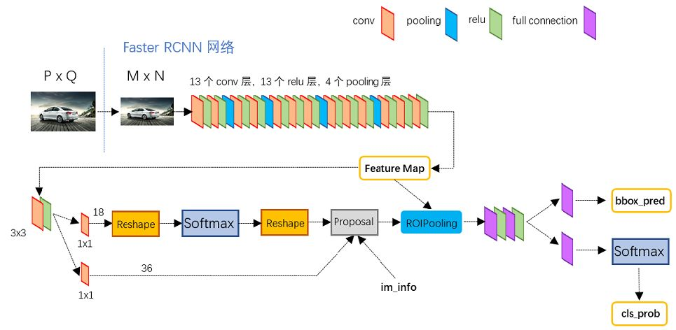

参考链接：https://zhuanlan.zhihu.com/p/31426458
简介
Faster RCNN是Ross B. Girshick在2016年提出的。
Faster RCNN(Region CNN)可以分为4个主要内容：
- Conv layers。作为一种CNN网络目标检测方法，Faster RCNN首先使用一组基础的conv+relu+pooling层提取image的feature maps。该feature maps被共享用于后续RPN层和全连接层。
- Region Proposal Networks。RPN网络用于生成region proposals。该层通过softmax判断anchors属于positive或者negative，再利用bounding box regression修正anchors获得精确的proposals。
- Roi Pooling。该层收集输入的feature maps和proposals，综合这些信息后提取proposal feature maps，送入后续全连接层判定目标类别。
- Classification。利用proposal feature maps计算proposal的类别，同时再次bounding box regression获得检测框最终的精确位置。

下图为python版本中的VGG16模型中的faster_rcnn_test.pt的网络结构，可以清晰的看到该网络对于一副任意大小PxQ的图像，首先缩放至固定大小MxN，然后将MxN图像送入网络；而Conv layers中包含了13个conv层+13个relu层+4个pooling层；RPN网络首先经过3x3卷积，再分别生成positive anchors和对应bounding box regression偏移量，然后计算出proposals；而Roi Pooling层则利用proposals从feature maps中提取proposal feature送入后续全连接和softmax网络作classification（即分类proposal到底是什么object）。

1. Conv Layers
Conv layers包含了conv，pooling，relu三种层。以python版本中的VGG16模型中的faster_rcnn_test.pt的网络结构为例，如图2，Conv layers部分共有13个conv层，13个relu层，4个pooling层。这里有一个非常容易被忽略但是又无比重要的信息，在Conv layers中：
- 所有的conv层都是：kernel_size=3，pad=1，stride=1
- 所有的pooling层都是：kernel_size=3，pad=2，stride=2
这意味着conv层的输入和输出都是M*N的大小。pooling层将输出长宽变为输入的1/2.那么，一个MxN大小的矩阵经过Conv layers固定变为(M/16)x(N/16)！这样Conv layers生成的feature map中都可以和原图对应起来。
2. Region Proposal Networks(RPN)
Faster RCNN则抛弃了传统的滑动窗口和SS方法，直接使用RPN生成检测框，这也是Faster R-CNN的巨大优势，能极大提升检测框的生成速度。
RPN网络实际分为2条线，上面一条通过softmax分类anchors获得positive和negative分类，下面一条用于计算对于anchors的bounding box regression偏移量，以获得精确的proposal。而最后的Proposal层则负责综合positive anchors和对应bounding box regression偏移量获取proposals，同时剔除太小和超出边界的proposals。其实整个网络到了Proposal Layer这里，就完成了相当于目标定位的功能。
2.1 anchors
所谓anchors，实际上就是一组由rpn/generate_anchors.py生成的矩形。9个矩形共有3种形状，长宽比为大约为{1:2,1:1,2:1}三种。实际上通过anchors就引入了检测中常用到的多尺度方法。
如下图，遍历Conv layers计算获得的feature maps，为每一个点都配备这9种anchors作为初始的检测框。这样做获得检测框很不准确，不用担心，后面还有2次bounding box regression可以修正检测框位置。
上图中的各个数字
- 在原文中使用的是ZF model中，其Conv Layers中最后的conv5层num_output=256，对应生成256张特征图，所以相当于feature map每个点都是256-dimensions
- 在conv5之后，做了rpn_conv/3x3卷积且num_output=256，相当于每个点又融合了周围3x3的空间信息（猜测这样做也许更鲁棒？反正我没测试），同时256-d不变（如图4和图7中的红框）
- 假设在conv5 feature map中每个点上有k个anchor（默认k=9），而每个anhcor要分positive和negative，所以每个点由256d feature转化为cls=2k scores；而每个anchor都有(x, y, w, h)对应4个偏移量，所以reg=4k coordinates
- 补充一点，全部anchors拿去训练太多了，训练程序会在合适的anchors中随机选取128个postive anchors+128个negative anchors进行训练（什么是合适的anchors下文5.1有解释）
其实RPN最终就是在原图尺度上，设置了密密麻麻的候选Anchor。然后用cnn去判断哪些Anchor是里面有目标的positive anchor，哪些是没目标的negative anchor。所以，仅仅是个二分类而已！
Anchor一共有多少个？原图800x600，VGG下采样16倍，feature map每个点设置9个Anchor，所以：
$ceil(800/16)\times ceil(600/16)\times 9=50\times 38 \times 9 = 17100$
2.2 bounding box regression原理
对于窗口一般使用四维向量$(x,y,w,h)$表示，分别表示窗口的中心点坐标和宽高。对于图 11，红色的框A代表原始的positive Anchors，绿色的框G代表目标的GT，我们的目标是寻找一种关系，使得输入原始的anchor A经过映射得到一个跟真实窗口G更接近的回归窗口G’.即：
- 给定anchor $A=(A_x,A_y,A_w,A_h)$和$GT=[G_x,G_y,G_w,G_h]$
- 寻找一种变换F使得:$F(A_x,A_y,A_w,A_h)=(G_x^{‘},G_y^{‘},G_w{‘},G_h^{‘})$
一种简单的思路就是平移后缩放：
平移：$G_x^{‘}=A_w·d_x(A)+A_x$
$G_y^{‘}=A_w·d_y(A)+A_y$
缩放：$G_w^{‘}=A_w·exp(d_w(A))$
$G_h^{‘}=A_h·exp(d_h(A))$
A_x等为系数，需要学习的参数有$d_x(A),d_y{A},d_w(A),d_h(A)$。
对于训练bouding box regression网络回归分支，输入是cnn feature Φ，监督信号是Anchor与GT的差距，即训练目标是：输入 Φ的情况下使网络输出与监督信号尽可能接近。
2.3 proposal layer
Proposal Layer负责综合所有anchors的变换量和positive anchors，计算出精准的proposal，送入后续RoI Pooling Layer。
Proposal Layer有3个输入：positive vs negative anchors分类器结果rpn_cls_prob_reshape，对应的bbox reg的变换量rpn_bbox_pred，以及im_info；另外还有参数feat_stride=16，这和图4是对应的。
im_info 对于一副任意大小PxQ图像，传入Faster RCNN前首先reshape到固定MxN，im_info=[M, N, scale_factor]则保存了此次缩放的所有信息。然后经过Conv Layers，经过4次pooling变为WxH=(M/16)x(N/16)大小，其中feature_stride=16则保存了该信息，用于计算anchor偏移量。
这里的输出是[x1,y1,x2,y2]是对应M*N输入图像尺度的。
3. ROI pooling
Rol pooling层有2个输入：
- 原始的feature maps
- RPN输出的proposal boxes（大小各不相同）
RoI Pooling layer forward过程：
- 由于proposal是对应MXN尺度的，所以首先使用spatial_scale参数将其映射回(M/16)X(N/16)大小的feature map尺度；
- 再将每个proposal对应的feature map区域水平分为
pooled_w * pooled_h的网格；- 对网格的每一份都进行max pooling处理。
这样处理后，即使大小不同的proposal输出结果都是固定大小，实现了固定长度输出。
4. Faster RCNN的训练
6个步骤
- 在已经训练好的model上，训练RPN网络，对应stage1_rpn_train.pt
- 利用步骤1中训练好的RPN网络，收集proposals，对应rpn_test.pt
- 第一次训练Fast RCNN网络，对应stage1_fast_rcnn_train.pt
- 第二训练RPN网络，对应stage2_rpn_train.pt
- 再次利用步骤4中训练好的RPN网络，收集proposals，对应rpn_test.pt
- 第二次训练Fast RCNN网络，对应stage2_fast_rcnn_train.pt
5 QA
为何有ROI Pooling还要把输入图片resize到固定大小的MxN
由于引入ROI Pooling，从原理上说Faster R-CNN确实能够检测任意大小的图片。但是由于在训练的时候需要使用大batch训练网络，而不同大小输入拼batch在实现的时候代码较为复杂，而且当时以Caffe为代表的第一代深度学习框架也不如Tensorflow和PyTorch灵活，所以作者选择了把输入图片resize到固定大小的800x600。这应该算是历史遗留问题。